Red = hand line segments, blue = print. Check that the boxes cover the tokens. Rows 39, 60, 241 are yours (60 is unlabelled in the gold sheet); the other 30 are random labelled rows (Random(20)). Boxes are segment boxes: for a segment cut out of a line they are char-proportional.
39 60 241 4 10 13 14 19 26 29 40 44 66 92 94 96 129 133 140 150 189 190 206 207 227 228 238 245 250 255 260 275 290
Print has many missing whitespaces. The spelling of the target word is "goetgevonden", same as hand.
| hand tokens | goetgevonden | found (exact): goetgevonden |
|---|---|---|
| print tokens | goegevonden | found (exact): goegevonden |
flags: · predicted: persists_htr_ocr character-level HTR/OCR error persists; both token strings found unchanged
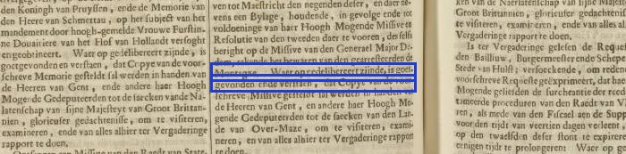
(no note)
| hand tokens | hautes | found (exact): hautes |
|---|---|---|
| print tokens | thaures | found (exact): thaures |
flags: · predicted: unchanged_free
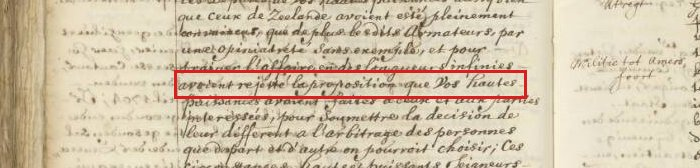
(no note)
| hand tokens | het selve | found (exact): het selve |
|---|---|---|
| print tokens | hetselve | found (exact): hetselve |
flags: · predicted: persists_glue whitespace missing in print (or hand) text; both token strings found unchanged; repair is off (UA-003)
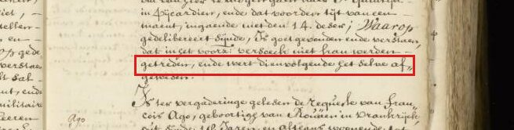
(no note)
| hand tokens | Ed:Mog: | found (exact): Ed:Mog: |
|---|---|---|
| print tokens | Edele Mog. | found (exact): Edele Mog. |
flags: · predicted: unchanged_free
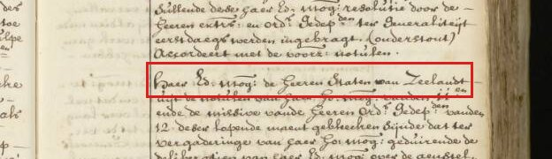
(no note)
| hand tokens | copie vande voorz: reqte. | found (exact): copie vande voorz: reqte. |
|---|---|---|
| print tokens | Copye van de voorschreve Requeste | found (exact): Copye van de voorschreve Requeste |
flags: · predicted: unchanged_free
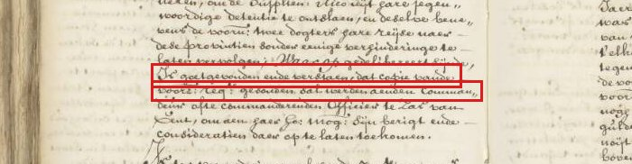
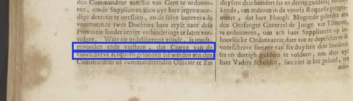
(no note)
| hand tokens | vande vijff | found (exact): vande vijff |
|---|---|---|
| print tokens | van de vijf | found (exact): van de vijf |
flags: · predicted: persists_glue whitespace missing in print (or hand) text; both token strings found unchanged; repair is off (UA-003)
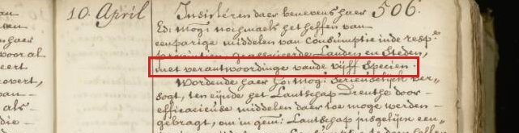
(no note)
| hand tokens | vande hooggem: provintie haere | found (exact): vande hooggem: provintie haere |
|---|---|---|
| print tokens | van de hoogh-gemelde Provincie hare | found (exact): van de hoogh-gemelde Provincie hare |
flags: · predicted: unchanged_free
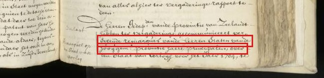
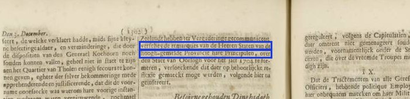
hand has "247." which is a page number that should not be part of the main text line.
| hand tokens | gem: 247. | found (none): |
|---|---|---|
| print tokens | gemelden | found (exact): gemelden |
flags: · predicted: changed
hand: tokens not found, no boxes.
print missing whitespace, there is also a segmentation difference.
| hand tokens | den uijtvoer vande voorz: paerden te verleenen een vrij paspoort, en | found (exact): den uijtvoer vande voorz: paerden te verleenen een vrij paspoort, en |
|---|---|---|
| print tokens | denuytvoervande voorschrevePaerden teverlee. neneenvry Pasports ende | found (exact): denuytvoervande voorschrevePaerden teverlee. neneenvry Pasports ende |
flags: print_glue_token · predicted: persists_glue whitespace missing in print (or hand) text; both token strings found unchanged; repair is off (UA-003)
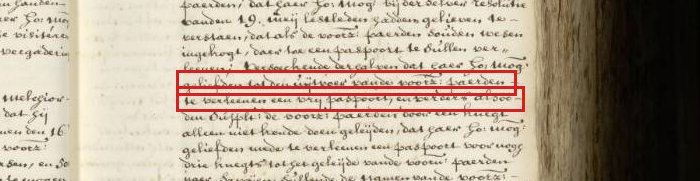
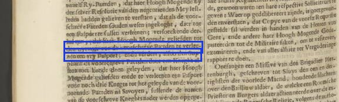
(no note)
| hand tokens | bezaens | found (exact): bezaens |
|---|---|---|
| print tokens | Besaens | found (exact): Besaens |
flags: · predicted: unchanged_free
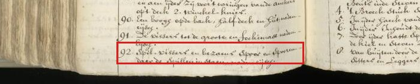
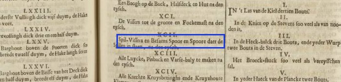
print missing whitespace
| hand tokens | het gepasseerde inde laetste actie | found (exact): het gepasseerde inde laetste actie |
|---|---|---|
| print tokens | hetgepasseerdein delaetsteactie | found (exact): hetgepasseerdein delaetsteactie |
flags: · predicted: persists_glue whitespace missing in print (or hand) text; both token strings found unchanged; repair is off (UA-003)
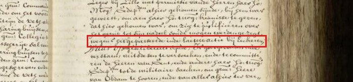
The token spans are not aligned
| hand tokens | haer Ho:Mog: resolutie vanden 12. Maart | found (exact): haer Ho:Mog: resolutie vanden 12. Maart |
|---|---|---|
| print tokens | den twaelfden Maert | found (exact): den twaelfden Maert |
flags: · predicted: needs_realignment token spans differ in extent between hand and print (contexts aligned); text unchanged, LotA must re-align
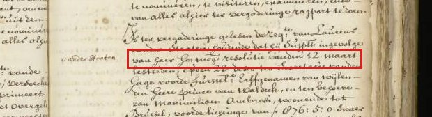
(no note)
| hand tokens | bij reductie | found (exact): bij reductie |
|---|---|---|
| print tokens | byre - Jductie | found (fuzzy): byreJductie |
flags: · predicted: changed
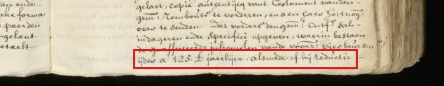
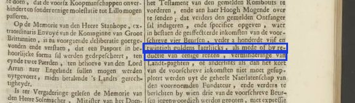
the tokens are misaligned, the contexts are not
| hand tokens | ende denselven aen | found (exact): ende denselven aen |
|---|---|---|
| print tokens | en den selven aente schrijven en | found (exact): en den selven aente schrijven en |
flags: · predicted: needs_realignment token spans differ in extent between hand and print (contexts aligned); text unchanged, LotA must re-align
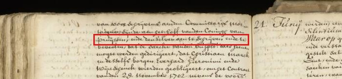
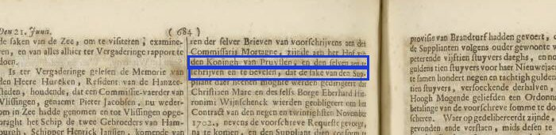
(no note)
| hand tokens | frans: | found (exact): frans: |
|---|---|---|
| print tokens | Fransche | found (exact): Fransche |
flags: · predicted: unchanged_free
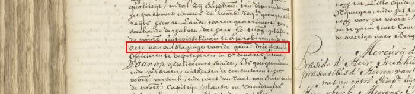
(no note)
| hand tokens | sijnde, | found (exact): sijnde, |
|---|---|---|
| print tokens | zijnde, | found (exact): zijnde, |
flags: · predicted: unchanged_free
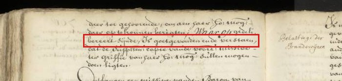
(no note)
| hand tokens | vrij gelaten | found (exact): vrij gelaten |
|---|---|---|
| print tokens | vrygelaten | found (exact): vrygelaten |
flags: · predicted: unchanged_free
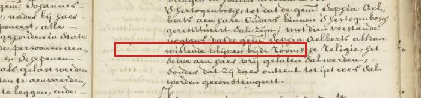
print scan has "vry kost-" at the end of one line, and "en" at the start of the following line. hand scan has "vrij kost" (with maybe a hyphen-like word break char) at the end of one line, and "en" at the start of the following line.
| hand tokens | vrij kost | found (exact): vrij kost |
|---|---|---|
| print tokens | vrykost - | found (none): |
flags: · predicted: needs_realignment print line-end hyphen now merged (vrykosten) but hand still has "vrij kost" + "en"; the old pair no longer exists
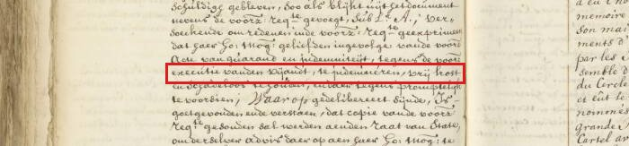
print: tokens not found, no boxes.
print missing whitespace: "geresumeert ende"
| hand tokens | geresumeert ende | found (exact): geresumeert ende |
|---|---|---|
| print tokens | geresumeertende | found (fuzzy): geresu- meertende |
flags: · predicted: persists_glue line-end break "rem." + "boursement" (or "geresu- meertende") stays unmerged: "." is not a break char, and the glue persists
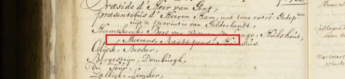
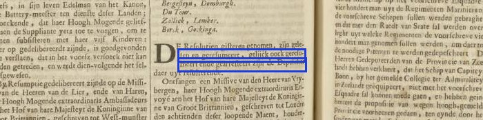
(no note)
| hand tokens | voorz: reqte. gevoegt, | found (exact): voorz: reqte. gevoegt, |
|---|---|---|
| print tokens | voorschreveRequestegevoeght, | found (fuzzy): voorschreveRequestege voeght, |
flags: print_glue_token · predicted: changed
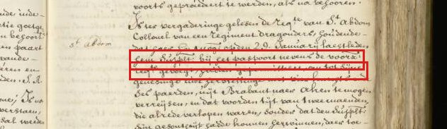
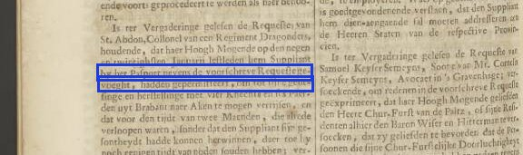
(no note)
| hand tokens | bovengem: | found (exact): bovengem: |
|---|---|---|
| print tokens | bovengemelde | found (exact): bovengemelde |
flags: · predicted: unchanged_free
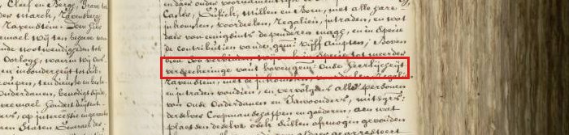
(no note)
| hand tokens | claudestin | found (exact): claudestin |
|---|---|---|
| print tokens | clandestin | found (exact): clandestin |
flags: · predicted: persists_htr_ocr character-level HTR/OCR error persists; both token strings found unchanged
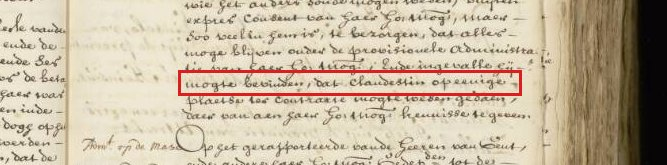
(no note)
| hand tokens | voorz: | found (exact): voorz: |
|---|---|---|
| print tokens | voorschreve | found (exact): voorschreve |
flags: · predicted: unchanged_free
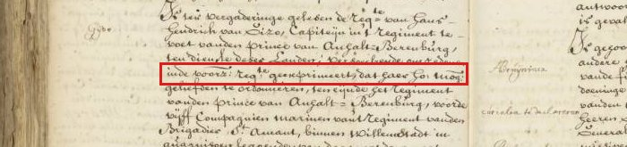
The drop capital "L" is not transcribed
| hand tokens | Le | found (exact): Le |
|---|---|---|
| print tokens | E | found (exact): E |
flags: · predicted: persists_htr_ocr character-level HTR/OCR error persists; both token strings found unchanged
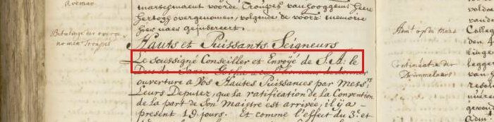
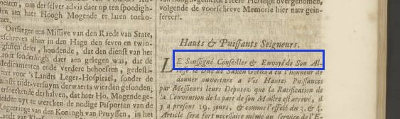
(no note)
| hand tokens | gerafineerde | found (exact): gerafineerde |
|---|---|---|
| print tokens | gerofineerde | found (exact): gerofineerde |
flags: · predicted: persists_htr_ocr character-level HTR/OCR error persists; both token strings found unchanged
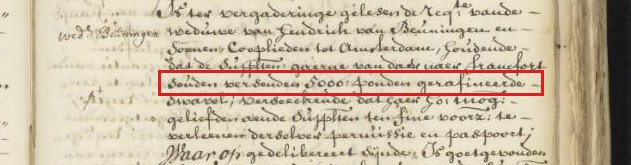
print scan has "by deselve" (seems like a lot of the text in the transcription is lacking whitespace between words).
| hand tokens | bij deselve | found (exact): bij deselve |
|---|---|---|
| print tokens | bydeselve | found (exact): bydeselve |
flags: · predicted: persists_glue whitespace missing in print (or hand) text; both token strings found unchanged; repair is off (UA-003)
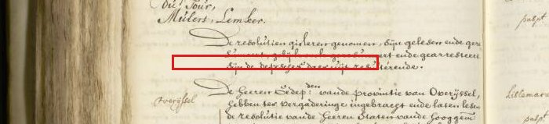
(no note)
| hand tokens | Sintzendorff | found (exact): Sintzendorff |
|---|---|---|
| print tokens | Sintzendorf | found (exact): Sintzendorf |
flags: · predicted: persists_htr_ocr character-level HTR/OCR error persists; both token strings found unchanged
(no note)
| hand tokens | Engelant | found (exact): Engelant |
|---|---|---|
| print tokens | Engelandt | found (exact): Engelandt |
flags: · predicted: unchanged_free
In both hand and print transcriptions, the text lines of two columns have been merged, one in Dutch and one in French. Alignment makes no sense here.
| hand tokens | Rhijnberque | found (exact): Rhijnberque |
|---|---|---|
| print tokens | Rhinber- alle goede officien Jgue | found (exact): Rhinber- alle goede officien Jgue |
flags: · predicted: unclear two columns (Dutch + French) still interleaved in one main_text unit in hand (unit 0) and print; column merge persists
The tokens are misaligned. The hand_context has "ende off, en in hoe verre in" where the print_context has "en ofen in hoe verrein". So there is both spelling difference and multiple missing whitespaces in the print_context.
| hand tokens | found (none): | |
|---|---|---|
| print tokens | ofen | found (exact): ofen |
flags: · predicted: changed
hand: tokens not found, no boxes.
I'm not sure I'm applying the labelling rules correctly. In the print scan there are whitespaces between 'toe', 'seer' and 'ge-' (where 'ge-' is the end of the line), but in the transcription this is probably missing.
| hand tokens | toe seer gewilligh | found (exact): toe seer gewilligh |
|---|---|---|
| print tokens | toeseerge willigh | found (exact): toeseerge willigh |
flags: · predicted: persists_glue whitespace missing in print (or hand) text; both token strings found unchanged; repair is off (UA-003)
Both transcriptions are correct, so I'm not sure why print has plural and hand has singular.
| hand tokens | copie | found (exact): copie |
|---|---|---|
| print tokens | copien | found (exact): copien |
flags: · predicted: unchanged_free
In the scans of hand and print the Latin phrase is the same, but both transcriptions have errors.
| hand tokens | Clementissimi nomine peneIpsas commoratus | found (exact): Clementissimi nomine peneIpsas commoratus |
|---|---|---|
| print tokens | clementissi nominé penes ipsascom - Jmoratus | found (fuzzy): clementissi nominé penes ipsascomJmoratus |
flags: · predicted: persists_htr_ocr character-level HTR/OCR error persists; both token strings found unchanged